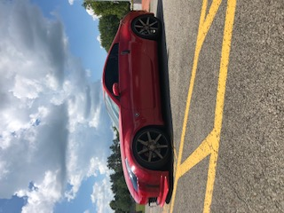

I am from Youngstown Ohio, a once booming industrial area on the eastern border of Ohio. Youngstown is about an hour away from the Pittsburgh International Airport.
Not much has come from Youngstown over the last few years other than the production of the Chevy Cruise. Youngstown is the Pinnacle of a rust belt city.
Once a booming Steel producer, Youngstown has had a constant decline in economic and social status ever since the steel buisness has gone over seas.
Baseball is an incredibly large part of my life and occupies most of my time. On average ill practice for about two or two and a half hours out of the day and then lift for one hour.
This may seem like a lot for some people but it has always been a passion of mine and does not seem to effect as much as it used too.
I am currently committed to the University of Dayton which is a Division 1 program located in Dayton, Ohio. While at the University of Dayton i wil be enrolled in their Aerospae Engineering program.
However, this year I have earned the great opportunity to be considered for the MLB Draft. On January 19th I will be attending a pro showcase hosted by my agent and his facility.
At this showcase there will be 15 scouts from various Major League teams who are there to watch me and a few other players.
I actually do have some experience in very basic engineering principles and techniques. I have used AutoCad in a variety of situations before.
During this internship I used AutoCad to help design buildings, look at pre-exisiting structures, and plan out utilities. I also have used AutoCad to design parts for auto projects I have worked on n the past.
I took this class in order to help prepare me for college next year and see how my skills stack up against others witin the class.
I have always had a pretty mechanical mindset. Growing up my dad would build large model aircraft and we even used to own a hobby store which is where i caught my first glimpse of small engineering feats.
It was always intersting to see some R/C cars top out at near 100 miles per hour. I look forward to working on a variety of projects within this class and i aready ave a few ideas for my final project.